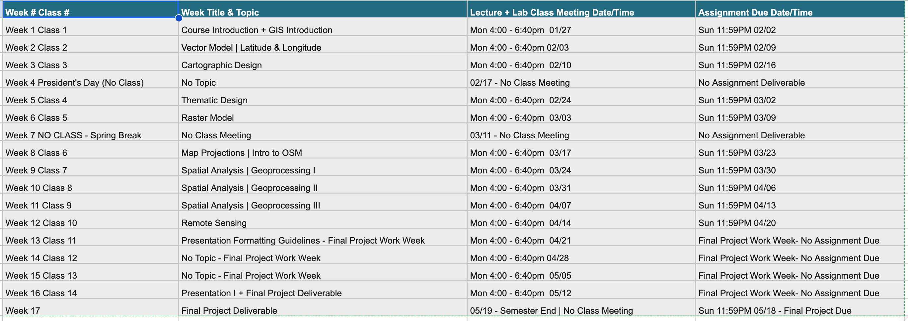

Class 11 Assignment: Final Project Stage 2 - Developing a GIS Methodology
Spring 2025 | UENV3200 + UURB3210 | CRN: 11008 + 11009
Assignment Preamble
This week’s assignment is NOT graded; it operates as a guide for developing the final project methodology over the next few weeks towards the final project deliverable. It offers design guidelines and references for the final project deliverable - both the GIS presentation and methods overview paper.
Class 11 Readings
No readings will be assigned for the remainder of the course.
Final Project Development Schedule:
For Spring semester 2025, we will follow course calendar.

Beginning Monday April 21th, there are 3 consecutive inclass work weeks devoted to the final project. Be sure to plan your final project schedule in phases in order to have your deliverables ready for both presentation and final upload.
Stage 2 Process Part I: Methodology
As discussed prior, the final project will be developed across 3 stages. The first stage has concluded - a proposed GIS question. The second stage leverages the refined GIS question into explicit data acquisition steps and spatial analysis methods designed to answer/solve the the GIS question/problem.
Prior to the final project work period, review this Assignment 11 to follow.
To start we will review a methods sections from two past student project’s. Note that the methods sections are generally technical steps designed to accomplish the task of the project.
Keep in mind that the project methods developed now during the Stage 2 Process will not only operate as both draft and guide for conducing the GIS analysis of the project, but will be developed into their own section - the methods section - of the project deliverable.
Keep diligent notes on data gathering, as well as diary-like entries for early working sessions of the GIS project. These notes can significant advantage the development of the final methods paper.
Developing an effective GIS methodology:
The following Methods categories are typical of GIS methodologies. These sections can be used to prompt the development of your particular project methods:
Data acquisition: early phase of any project.
- Where was the data acquired ?
- What is the vintage of the data ?
- What is the source ?
- Is there accessible metadata ?
- Is the temporal and spatial resolution of the data appropriate to the project ?
- What limitations does the data pose for the GIS project ?
Data clearning & formatting: following data acquisition, cleaning and formatting may need to occur.
- What format is the data ?
- Is there significant NULL records within the dataset(s) ?
- Do project issues exist both within and across dataset(s) ?
- Are there size and memory issues (file size) ?
GIS Method Categories: the following GIS project categories can be utilized as prompts for project methodology:
Spatial Data Development: GIS projects have to start with data, obviously. If the project features an unique dataset, or the development of a new data source, that can be a significant component of the project - one that can be evaluated as part of the project itself. An example of the emphasis on an unique data collection method is found in this paper regarding African Health Facilities. Here the data had to be developed and Geocoded for hospital locations before inception of the GIS analysis.
Emphasis on Spatial Analysis, Geoprocessing: GIS projects that feature extensive overlay techniques to derive meaningful spatial outputs. In this type of project the bulk of methods is devoted to geoprocessing steps. An example of this type of work can be found in a ‘classic’ GIS project entitled Asthma and air pollution in the Bronx: Methodological and data considerations in using GIS for environmental justice and health research.
Mapping Vulnerability: In this project model, a population is ascertained as vulnerable to a certain environmental, geographical risk. This model was covered during Class 7, and can be adapted for a final project method.
GIS Suitability: Suitability models seek to find conditions across various spatial layers of information to determine unique geographies that are either of concern or opportunity. This is an ideal model for continous surfaces that well represented by the raster model. This model was covered during class 9, and can be adapted for a final project method.
Remote Sensing | Change over Time: The temporal dimension of project data can be utilized to detect change over time within geographies streching back often decades - in the case of Landsat, 40 years. This opens the opportunity to quantify change over time utilizing the raster model. At its core, raster cells that change from one value to another over a temporal analysis period are assessed and categorized. This brief introduction to Tracking Change Over Time gives a preview of a topic that was covered in class 10; it can be adapted for a final project method.
Spatial Statistics: In addition to overlay methods, GIS has a suite of statistical tools that can be utilized to access spatial patterns, correlations and their strengths. Like statistics in general, spatial statistics seeks to understand the relationship between multiple variables - the addition here is the spatial component. While we will not cover spatial statistics in depth during this course, it is a method that can be utilized for a final GIS project. The following document serves as introduction to spatial statistics within the ESRI ArcGIS package. For each method listed, there are similar methods available in QGIS. Additionally, The GeoDa software project from The University of Chicago is a highly recommended ‘lite’ GIS package that excels at spatial statistics. It is very well documented, and ideal as an augment to your final project if you are planning to conduct spatial statistics as part of your project methodology.
Quantification and Summarization: typically the last step in a GIS methodology.
- What are the key findings of the GIS analysis ?
- Are there important rankings across the units of analysis for the project ?
- What classification methods are deployed to best capture project findings ?
- Are the project findings categorical or strictly quantitative ? Is there a mix of both ?
- Are there important correlations and variable relationships that can be explored and augmented along with project cartographic outputs ?
Stage 2 Process Part II: Presentation
Following the development of the GIS methods and project analysis, you will move along to quantification of your results as well as design and development of the project presentation.
Following the final submission, each student project will be archived at a course project site. To follow, are archived sites for Fall 2019 and Fall 2023 student projects:
Utilize the following Class 11 Slides and Class 11 Recorded Lecture Slide - Steps, Formatting, Visualization Strategies for an overview to develop the project presentation. In the Class 11 Slides, the following prompts and strategies are covered:
- Wayfinding - progress bars, numbering
- Font Hierarchy
- Page Space - Grid Formats
- Variable Map Scales
- Projection Systems
- Slide progression and QGIS bookmarks
- Quantification + Summarization: Charts & Maps
The password for the video is as follows: N2SX